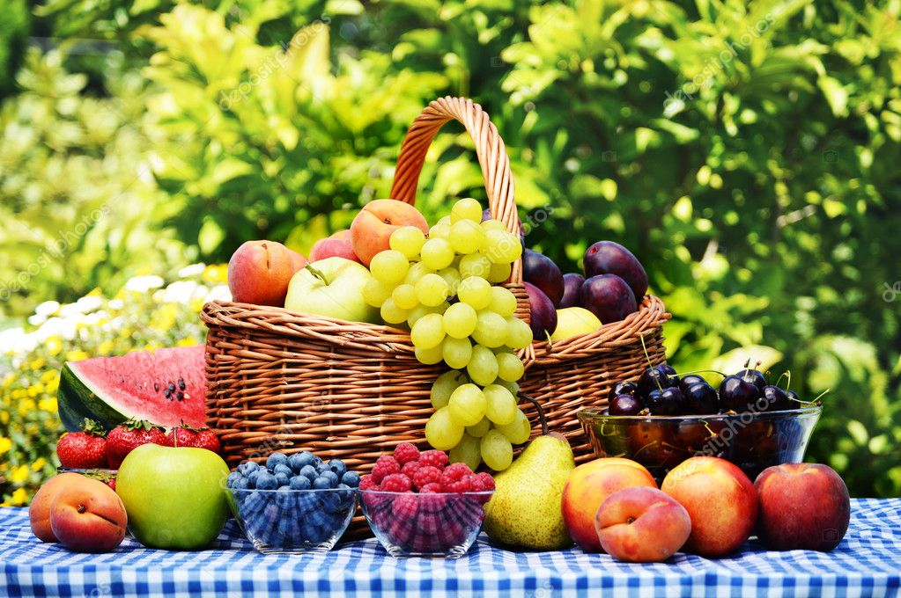

Fruits
Organically grown food is food that has been produced without the use of synthetic pesticides, synthetic fertilizers or sewage sludge, bioengineering, or ionizing radiation. the organic food industry has grown a lot these days,with good sales across all the countries in the world. More organic food was purchased in conventional supermarkets than in any other venue. Organic products are now available in nearly 20,000 natural food stores and are sold in 73% of all conventional grocery stores .